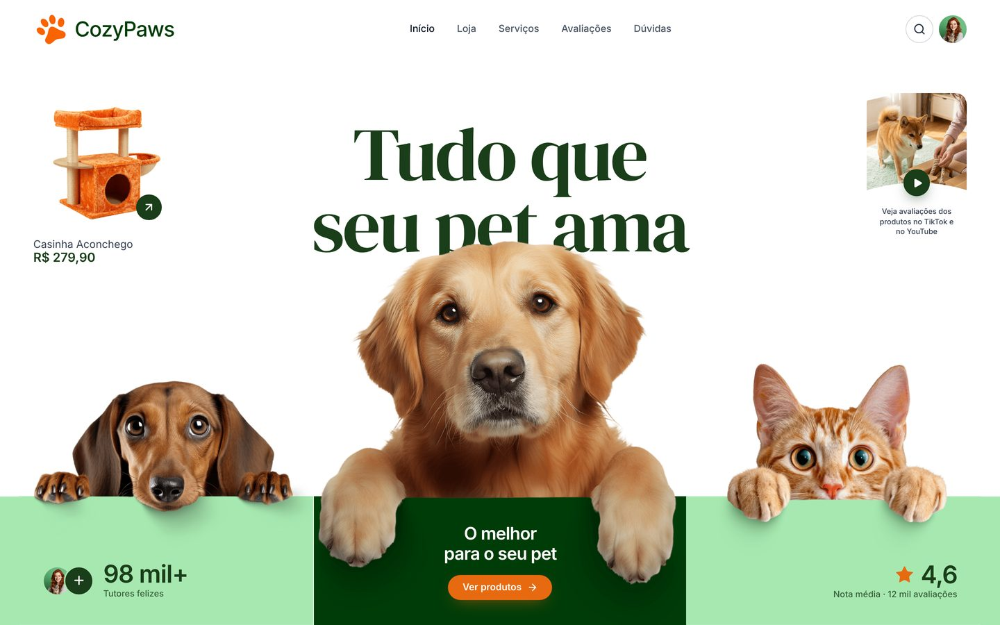
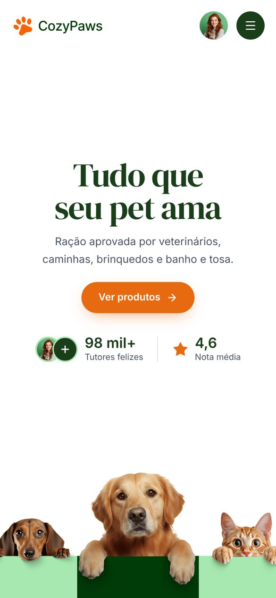
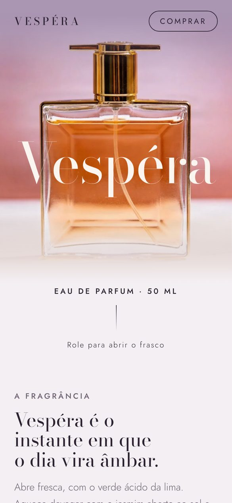
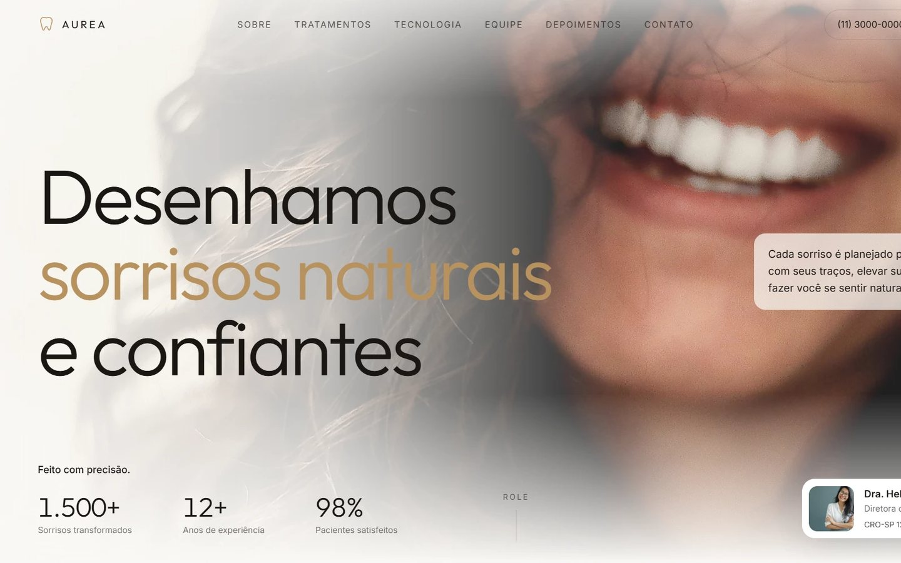
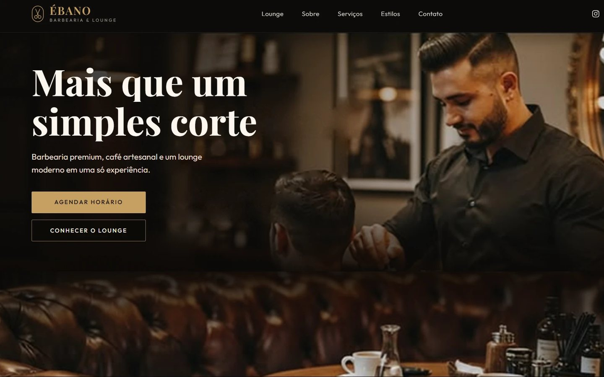
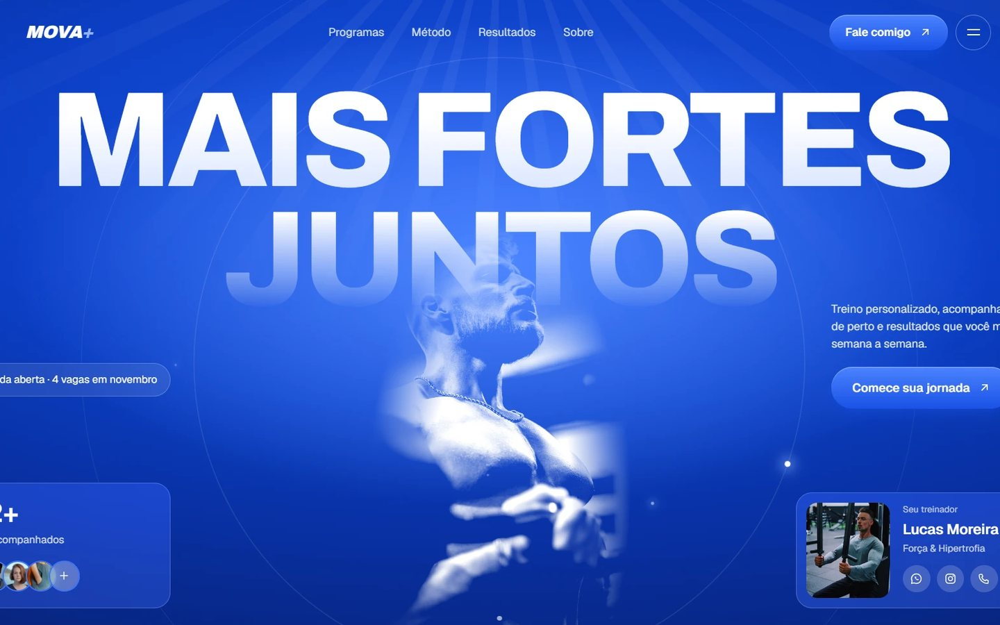
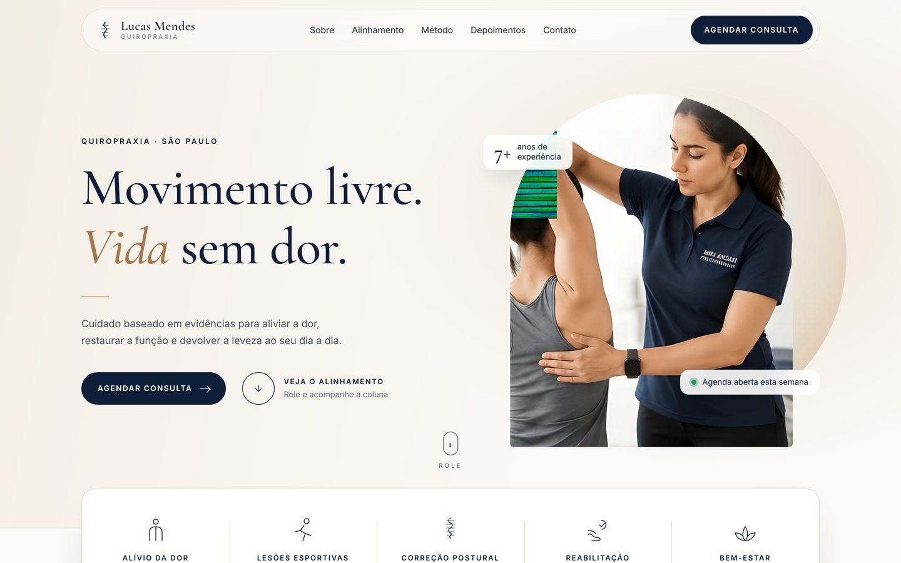
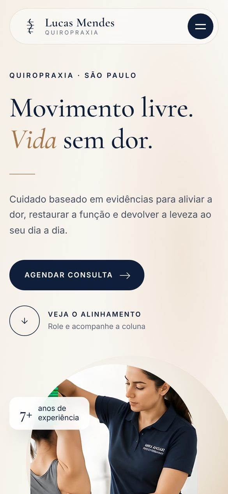

Varejo · Pet shop
CozyPaws
Loja e serviços para pets, com vitrine de produtos, categorias por espécie e agendamento de banho e tosa, veterinário e creche.
Ver siteEstúdio de sites · Nicholas Fredes
Eu desenho e desenvolvo sites sob medida para negócios que querem ser lembrados. Animação, velocidade e um visual que não se parece com o de mais ninguém.
Manifesto
Antes de entrar na sua empresa, o cliente entra no seu site. Eu cuido para que essa primeira visita tenha a mesma qualidade do seu atendimento: rápida, bonita e impossível de confundir com a do concorrente.
Projetos


Varejo · Pet shop
Loja e serviços para pets, com vitrine de produtos, categorias por espécie e agendamento de banho e tosa, veterinário e creche.
Ver site
Perfumaria · Lançamento
Página de lançamento de um eau de parfum. A rolagem abre o frasco quadro a quadro, as notas de lima, jasmim e âmbar flutuam ao redor e o frasco troca de lado a cada painel.
Ver siteTecnologia · Produto
Página de produto para fones sem fio. O fone se desmonta camada por camada na rolagem e a tela do case mostra os atalhos de volume, papel de parede e idioma.
Ver site
Saúde · Clínica odontológica
Clínica de estética, implantes e ortodontia invisível. Abertura animada, tons claros e dourados, números da clínica e a diretora em destaque logo no topo.
Ver site
Barbearia · Lounge
Barbearia premium, café artesanal e um lounge moderno numa só experiência. Site escuro com detalhes dourados e agendamento em destaque.
Ver site
Fitness · Personal trainer
Site do personal Lucas Moreira, com título gigante animado, programas de treino, resultados dos alunos e agenda aberta para novas vagas.
Ver site

Saúde · Quiropraxia
Visual calmo e editorial. A coluna vertebral se alinha enquanto a pessoa rola a página, mostrando o antes e o depois do tratamento.
Ver siteValinhos · SP
Futevôlei
de verdade.
Esporte · Centro de treinamento
Centro de treinamento de futevôlei em Valinhos. Galerias de fotos, turmas, professores e aula experimental em poucos toques.
Ver sitePor dentro
Gravações reais de dois sites da Viewport. Cada movimento acompanha o dedo ou o mouse do visitante, quadro a quadro.
Aplicações
A casa do seu negócio na internet: serviços, fotos, depoimentos, mapa e contato, com uma identidade só sua.
Loja ou vitrine com produtos, preços e pedido pelo WhatsApp ou pagamento online, simples de atualizar.
Uma página focada em uma oferta ou campanha, feita para transformar visitas em contatos e vendas.
Animações em 3D, áreas de cliente, agendamentos e o que mais o seu negócio precisar para se destacar.
Processo
Você acompanha cada etapa e fala direto comigo, do orçamento à entrega.
Clique para virar
Sobre
A Viewport é o meu estúdio. O nome vem da área da tela onde o site aparece, e é nela que eu penso o tempo todo: no celular do seu cliente, no computador do escritório, no tablet de quem pesquisa à noite no sofá.
Trabalho de perto com cada cliente. Quem conversa com você é quem desenha e programa o site, e cada projeto ganha pelo menos um detalhe que faz o visitante lembrar da marca.
Contato
Preencha ao lado e a mensagem abre pronta no WhatsApp. Eu respondo com as próximas etapas e um orçamento sem compromisso.